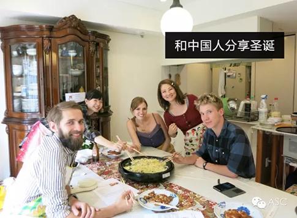
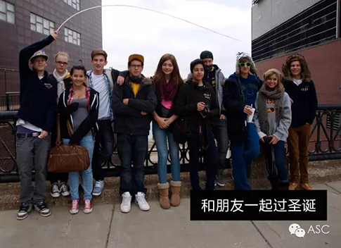
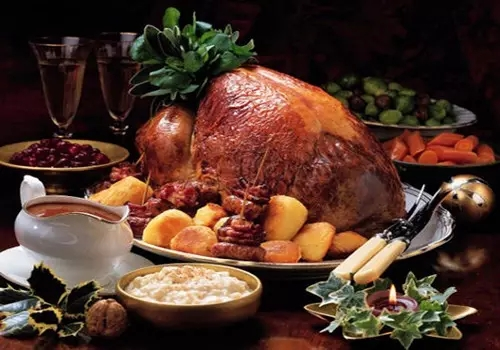

互惠动态
|
|
老外在中国竟然这样过圣诞节，90%的人不知道
▼
中国故乡文化源远流长
所以有“每逢佳节倍思亲”
一年一度的圣诞节马上要来了
在这个西方人民热衷的节日里
外国人如何渡过圣诞节呢？
尤其是在中国的外国人
他们会不会像中国人一样遥望月亮思念家乡？
老外在中国
如何过圣诞节？
关于这个问题，ASC国际互惠生机构最有发言权，作为一个每天要接待许多来自不同国家的互惠生和国际合作方的专业互惠生机构，ASC见证了每一个国际互惠生在中国的圣诞活动。而每到圣诞节，他们的过节方式则和中国的过节方式大不相同。
▼
有人说，圣诞节和中国大年夜一样
喝酒、唱歌、看节目
有人说，圣诞节中外过法很不同
外国人在家里，中国人在街上
下面跟着ASC的脚步
看看老外在中国究竟如何过圣诞节吧
关于圣诞节的小误区
中国，很多人认为圣诞节就是吃喝玩乐，逛街happy，互相赠送小礼物。但其实西方的圣诞节除了是合家团聚、吃喝、享受礼品的时候之外，更是涉及到生命、喜乐、慷慨、爱、宽恕、家庭和牺牲。因为圣诞节是纪念耶稣基督降生的节日。
国外人过圣诞节家人团聚吃大餐，他们的食品中包括烧猪、火鸡、圣诞布丁、 圣诞碎肉饼、巧克力和红酒，尤其是法国人在圣诞前夕差不多都要到教会参加子夜弥撒，意大利的儿童们则会作文或撰诗歌，感恩父母……
在中国
遇到圣诞节怎么办
回国过圣诞节
和很多的中国人一样，老外在中国也思念自己的家乡，尤其是圣诞节，如果时间允许的话，他们也会选择回到家中和家人团聚，共同庆祝圣诞~

很多老外在中国也会选择和中国人一起分享圣诞节。比如ASC的老师们，他们就会在圣诞节制作特殊的礼品送给学生们，一起渡过美妙的圣诞节~

老外在中国有他们的圈子，并非孤家寡人，他们会一起拆开圣诞礼物，听圣诞音乐，做祷告，动手做各种美食，去教堂，去好朋友家庆祝。ASC的很多老师们在这一天也会选择朋友聚会，一起品味圣诞节的美好。
在中国的老外，也会在圣诞节烹饪美食，享受圣诞节的快乐喔~
没有火鸡，怎么能叫圣诞节？

德国人圣诞必喝的红酒
三文鱼必不可少

老外在中国过圣诞节
正如中国人在海外过春节
各种体会，想必离过家的人都深有感触
即将到来的圣诞节
祝大家节日快乐
ASC感谢每一位在华的每一位互惠生
感谢每一个互惠家庭对ASC的信任
ASC宣
ASC国际互惠生项目公众号ASCCENTER
互惠生最早起源于英、法、德国等自发的青年活动，是指给来自全世界的青年提供一个寄住在他国家庭里体验文化学习语言的机会，如今我们把国外互惠生请来家庭里，照顾自家的孩子，从小培养外文的语言环境，为孩子出国，全家移民打下优良基础，关注个【公众微信号】ASCCENTER了解更多国外有趣资讯。
ASC国际互惠生客服号ASC-CENTER
24小时客服个人微信号，对接家庭与互惠生之间的问题，对互惠生项目有陌生不熟悉或者想了解更多信息的可以关注【个人微信号】ASC-CENTER与客服详细交流。